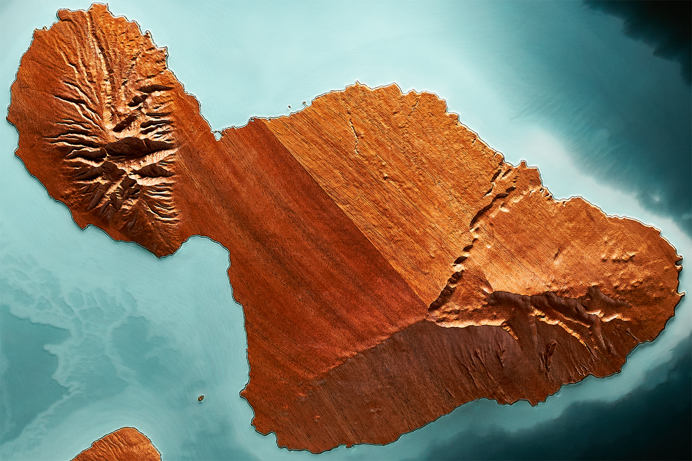
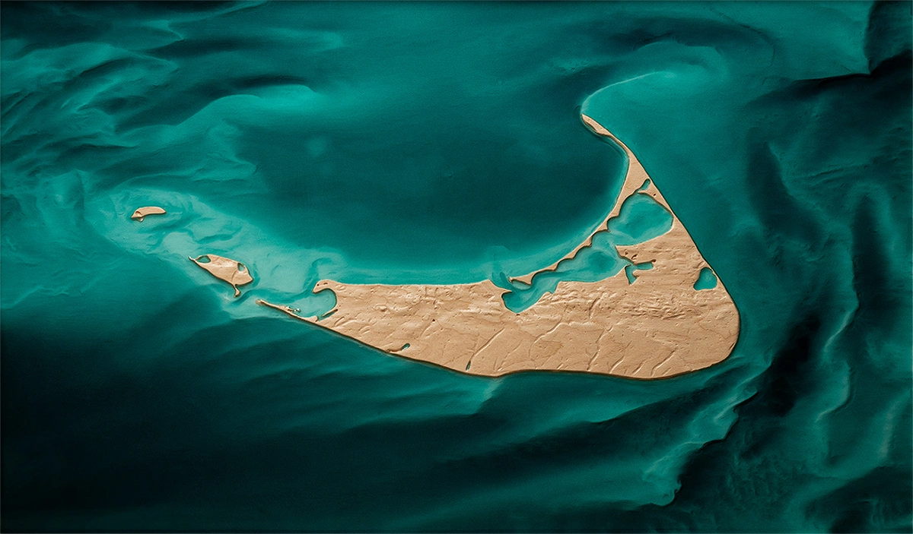

Bespoke Topographic Art
Transforming Landscape
Into Legacy
Explore
Every piece begins with a place that holds meaning.
Real terrain becomes sculptural relief
Precise in form, hand-finished in craft.
What emerges is landscape, story, and art.